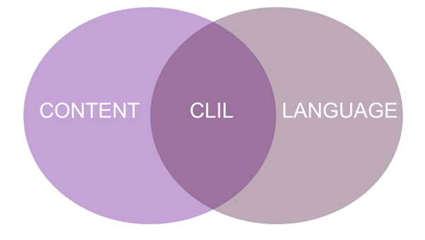
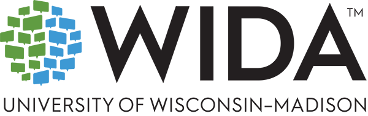
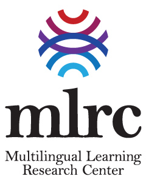

The Taoyuan American School (TYAS) Multilingual Learning (MLL) Program has been designed and implemented during the 2026–2027 school year to support the academic English needs students require to successfully access and participate in grade-level learning. The program recognizes multilingualism as an asset and values the diverse languages and cultures our students bring to the TYAS community. All multilingual learners are present within each mainstream class at TYAS.

TYAS teaches content and language within an integrated framework. Teachers use Content and Language Integrated Learning (CLIL) approaches to simultaneously develop students' academic language while learning subject content.
The MLL program has introduced co-teaching in Grades 1–8, allowing students to receive classroom-based support by following WIDA's collaborative co-teaching model.
Homeroom teachers are supported by learning support teachers within the mainstream classroom.
Homeroom teachers are supported by MLL teachers within the mainstream classroom.
Students requiring additional targeted language development may also participate in Period 9 classes to strengthen academic English and develop the skills needed to access grade-level learning.

Co-teaching at TYAS follows the collaborative framework developed by WIDA at the University of Wisconsin–Madison.
In Grades 9–12, the program shifts toward greater academic independence and university readiness. Classroom-based co-teaching is no longer provided; however, students requiring additional English language development may enroll in an Academic English elective, designed to strengthen the language skills needed for success in high school and to prepare them for future academic study.
To ensure that multilingual learners have the same opportunities and equitable access to rigorous learning, while developing the academic language, confidence, and independence to thrive academically and as active members of the school community.
TYAS is an active member of the Multilingual Learning Research Center

Advancing outcomes for multilingual learners through socially just research